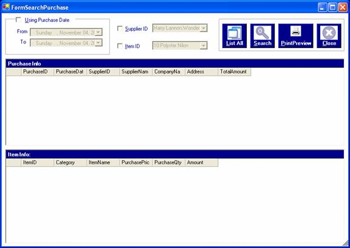
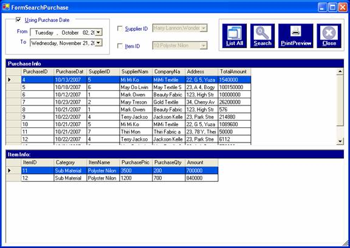
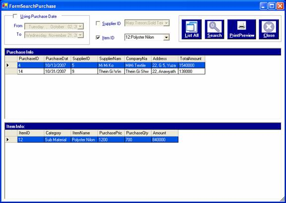
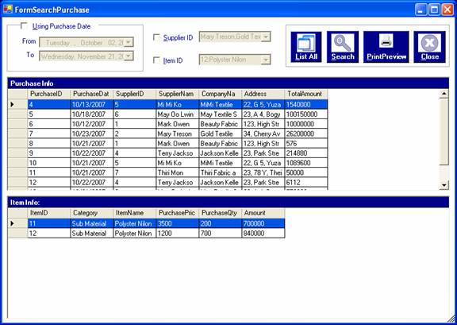
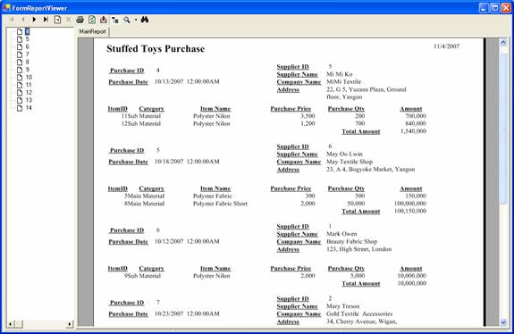

This browse is searched by supplier ID.
This browse is searched by supplier ID.How to process searching for purchasing
After you successfully log in to the system as a manager or an administrator, you can access purchasing information by choosing the required options in the form.
To open the form, click on the Search Menu and choose the "By Purchasing" . The "Search Purchase " form will be appeared.

In this form, you can search by Purchasedate, Supplier ID, Item ID. After choosing the options, click "Search" button or Alt+S.
To see the item information for each purchase, click on the row of purchase info grid and the information of item will be shown in the below gird called item info.
This browse is searched by supplier ID.
 This browse is searched by item ID.
To show all records of purchasing, click "List All" button or Alt+L.

To view as a report format, click "Print Preview" button or Alt+P.

To close the form, click "Close" button or Alt+C.